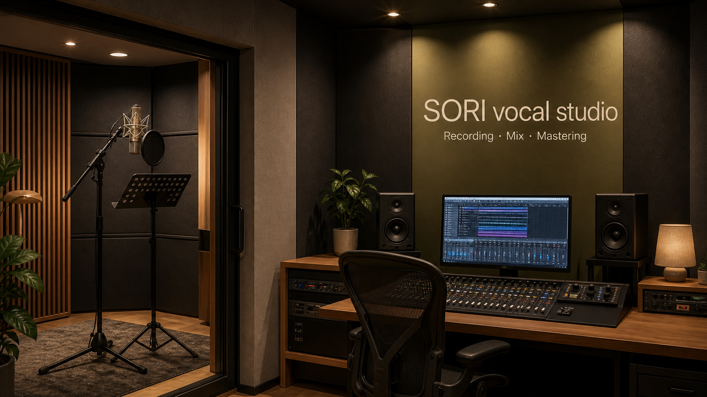

보컬 부스
짧은 테스트 녹음부터 실제 커버 녹음까지, 마이크 앞에서 현재 목소리의 톤과 호흡을 정확히 확인하는 공간입니다.
SORI vocal studio
보컬 부스와 디렉 컨트롤룸을 갖춘 SORI vocal studio입니다. 가녹음부터 실제 녹음, 보정, 믹싱, 전후 테스트까지 현재 목소리를 객관적으로 확인하고 결과물로 남기는 흐름으로 진행합니다.

짧은 테스트 녹음으로 현재 상태를 먼저 확인합니다.
컨트롤룸에서 박자, 음정, 톤을 바로 듣고 조정합니다.
정규 커리큘럼은 1곡 커버 완성을 기준으로 진행합니다.
Studio interior
짧은 테스트 녹음부터 실제 커버 녹음까지, 마이크 앞에서 현재 목소리의 톤과 호흡을 정확히 확인하는 공간입니다.
녹음 중 박자, 음정, 감정선, 발음 디렉을 바로 주고받으며 결과물을 함께 만들어가는 공간입니다.
좋은 결과물을 위해 커리큘럼을 소개하고, 현재 목표와 준비 상태에 맞춰 작업 방향을 함께 설정합니다.
Curriculum
Special curriculum
정규 과정 외에도 필요한 작업에 맞춰 축가 준비, 공연 준비, 음원 준비 커리큘럼을 별도로 구성할 수 있습니다.
Consultation flow
짧은 테스트 녹음을 통해 음정, 호흡, 톤, 리듬감을 객관적으로 들어보고 맞춤 커리큘럼을 잡습니다.
Contact